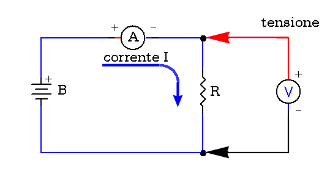
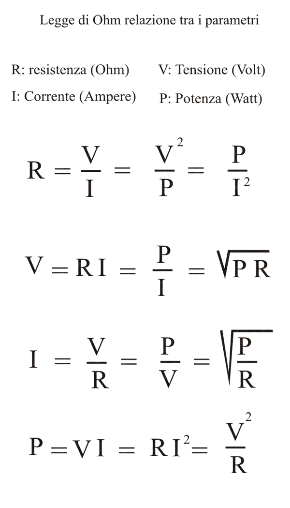

Misure & laboratorio
La Legge di Ohm (consigli per i principianti)
"Fai da te" di R.Chirio
Indice della pagina
Considerazioni
Marzo 2007
In base a quello che leggo sul web e anche al contenuto di alcune e-mail che ricevo, mi sembra che la semplice legge di Ohm non sia così chiara a tutti.....
...La Legge di Ohm stabilisce che, in ogni conduttore attraversato da una corrente elettrica, si produce una differenza di potenziale (o caduta di tensione) tra le sue estremità, questo dipende dalla resistenza propria del conduttore (resistività).
Ad elevate resistenze corrispondono cadute di tensione elevate, mentre a basse resistenze corrispondono piccole cadute di tensione, tutto questo a parità di corrente circolante.....
Schema di principio:

Data una sorgente di tensione continua B, e un carico R collegato in serie. Una corrente I fluirà attraverso il carico. Il prodotto tra la Tensione e la Corrente determina la potenza P sul carico R.
La tensione (V) deve essere misurata sul carico, quindi in parallelo, la corrente (I) che passa nel carico deve essere misurata in serie al carico.
Se misuriamo la corrente in parallelo al carico, in genere si distrugge l'amperometro, se misuriamo la tensione in serie al carico, non succede niente.....si apre il circuito in quanto i Voltmetri hanno un'alta resistenza in ingresso.
Relazione tra i Parametri V, I, R e P


Alcuni esempi:
Colleghiamo una resistenza da 12 ohm su una batteria da 12V, quale è la potenza sulla resistenza?
dalla relazione della Potenza otteniamo (V x V) / R da cui (12 x12)/12 = 12Watt
Sempre con una batteria da 12V, che resistenza devo mettere per avere una corrente da 10A e che potenza deve dissipare la Resistenza?
R=V/I 12V/10A=1,2 ohm la potenza è: V x I = 12 x 10= 120W
Semplice software per calcolare tutti i parametri della Legge di Ohm
http://sss-mag.com/exe/ohmslaw.exe
Interessante sito che propone calcoli automatici con Legge di Ohm:
http://www.csgnetwork.com/ohmslaw2.html
© Roberto Chirio: all rights reserved.